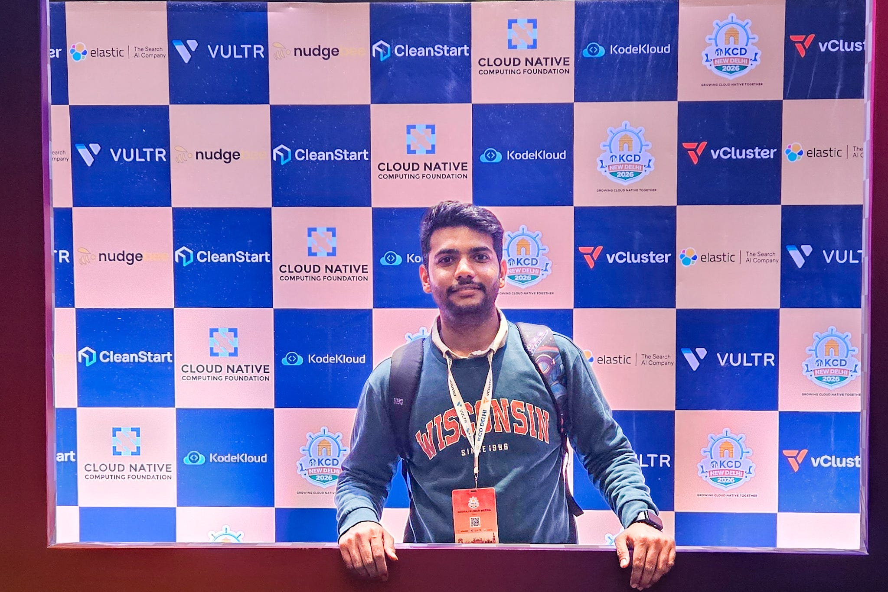
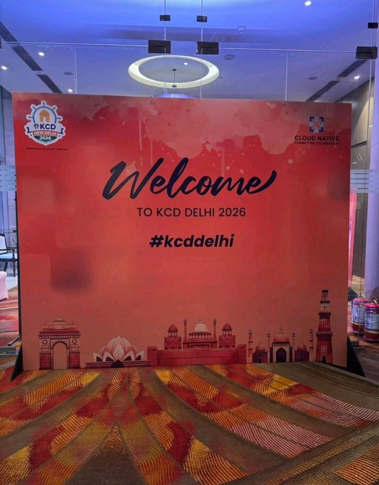
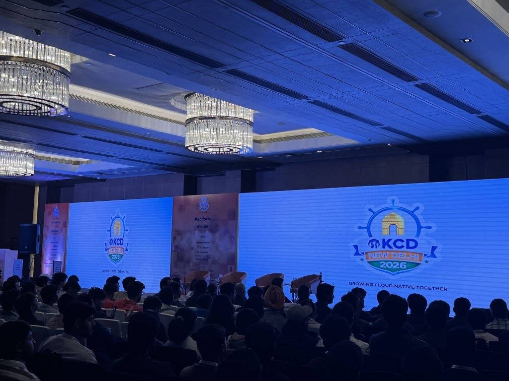
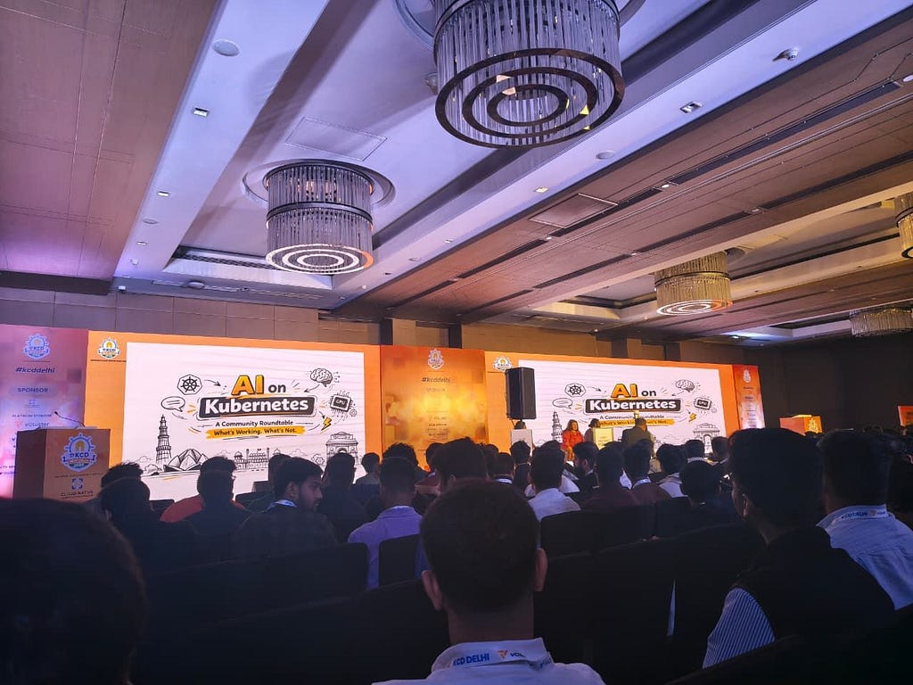
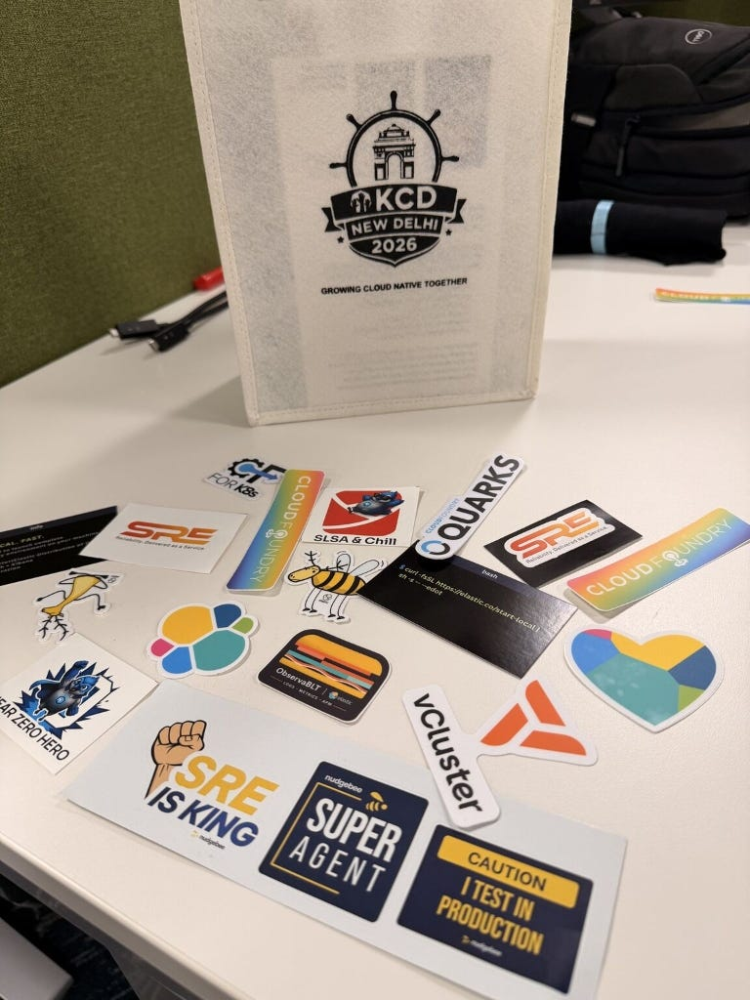

Why Tech Events Are 10x Better Than Watching Movies on Weekends
Contents
From a Early Morning Train to a Tech Event: My Journey to KCD Delhi #
We all know the Saturday morning feeling. You have had a long week of work or classes, and the easiest thing to do is stay in bed, watching netflix. It is passive, it is comfortable, and it requires zero effort. For a long time, that was my default.
But this time, I was too excited for a “comfort” weekend. I see KCD Delhi as the kind of event you just don’t miss. My journey started on a early morning train, traveling with that specific mix of exhaustion and high-energy anticipation. Since I was traveling strictly for the event, I had to dress up in a railway retiring room — a bit of a hustle, but all part of the story. I reached about 30 minutes late, but even then, the vibe was intense.

Specifically navigating through Delhi Metro, that really sets the tone for the city’s tech energy. It’s fast, efficient, and carries that “builders” vibe even before you reach the venue. Reaching the venue and being greeted with a kit of swags immediately made that morning travel feel completely worth it.
Real Engineering: What I See in Modern Infrastructure #
For the last four or five months, I have been diving deep into cloud-native systems and distributed architecture. While docs are helpful, I see a massive gap between theory and what actually happens in production. In my perspective, tech events are where you see that gap being closed.
From where I stand, these were the real engineering highlights:
- The AI and Kubernetes Evolution: I see this as the next major optimization phase for our industry. AI is not just hype; it is a tool for managing complex infrastructure. In my perspective, seeing how systems handle AI workloads at scale is fundamental for any modern engineer.
- Multi-cluster Networking Patterns: I see this as one of the biggest challenges in scalability. Learning about service mesh patterns like Istio in a live environment helped me understand that “Hello World” examples barely scratch the surface of real-world traffic management.

Mindset Growth: Conversations at the Booths #
One of the highlights for me was not just the talks, but the conversations at the booths. I tried to go deep — not just asking “what” the product does, but “how” it was built.
In my perspective, understanding the journey of a product is where the real learning happens. I spent time talking to booth members about:
- Problem Discovery: How they identified the specific pain point they were solving.
- Core Engineering: The technical hurdles they faced while building the solution.
- The “First Win”: How they achieved their first client success and what that taught them about the market.
I see these conversations as the ultimate mindset shift. They push your brain to grow beyond just learning “tools” and toward understanding how businesses and engineering solutions are actually forged in the real world.
Finding My Seat at the Table: Diversity and Growth #
One of the most powerful things I see in the community is the move toward inclusivity. From my perspective, hearing the experiences of underrepresented groups in tech was a reminder that we all face challenges like imposter syndrome.

I see this community support as a core part of what makes tech such a unique field. In my perspective, realizing there is a “seat at the table” for everyone makes it easier to keep pushing forward, even when the learning curve feels steep. For early career people and developers, I see these events as a high-speed lane for growth.
Final Thoughts and Gratitude #
As I navigate the fast-moving world of AI and infrastructure, I see that tech is not just about the tools — it is about the community. I’m walking away with a much clearer vision of my own path.
Finally, I want to say that I’m learning a lot from the experts I met and listened to. It was great to connect with Atulpriya Sharma, Saiyam Pathak, and Saloni Narang. Every event with you is a learning experience, and it was nice to meet you all.
Thanks ❤️ for the patience to read this! I’m attaching some event photos which I clicked randomly throughout the day to share the vibe.

Originally published on Medium.